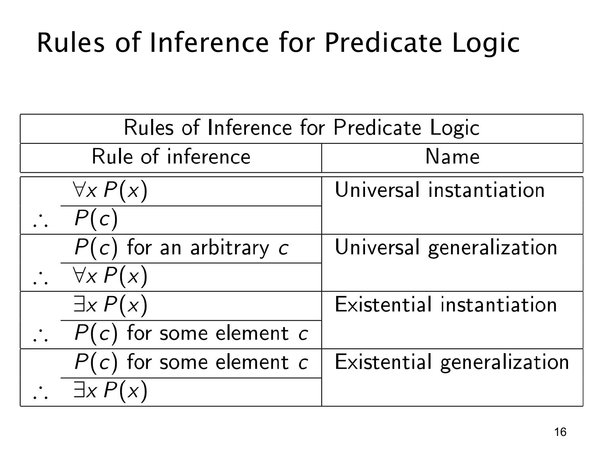

L1.3 · 第 16 页讲解原文
查看这一页课件

谓词逻辑的四种量词推理规则
这页原图用表格总结谓词逻辑中的四条规则，文字层只抽出了标题。它们连接“关于所有或某些对象的陈述”与“关于一个对象的陈述”。
全称实例化（universal instantiation）：从 ∀xP(x) 可推出 P(c)，其中 c 是论域中的任意一个指定对象。既然每个对象都满足 P，这个对象当然满足。
全称概括（universal generalization）：若对一个任意选取、没有特殊限制的对象 c 证明了 P(c)，便可推出 ∀xP(x)。关键字是“任意”：如果只对某个特定的 c 成立，或证明中使用了 c 的特殊性质，就不能概括到所有对象。
存在实例化（existential instantiation）：从 ∃xP(x) 可引入某个满足 P 的见证 c，于是可在证明中使用 P(c)。这里 c 是某个未知但确实存在的对象，并非你可随意指定的熟悉对象；在正式证明中通常需使用一个新的名称，避免混淆或把见证错误地当作任意对象。
存在概括（existential generalization）：若已知某个论域对象 c 满足 P(c)，就能推出 ∃xP(x)。给出一个见证便足够，不要求所有对象都满足。
两对规则容易混淆：全称实例化是“所有 ⇒ 一个”，存在概括是“一个 ⇒ 至少一个”；全称概括必须证明对象是任意的，存在实例化则只得到某个见证。不能从 ∃xP(x) 推出任意指定的 P(c)，也不能从一个特定 P(c) 推出 ∀xP(x)。